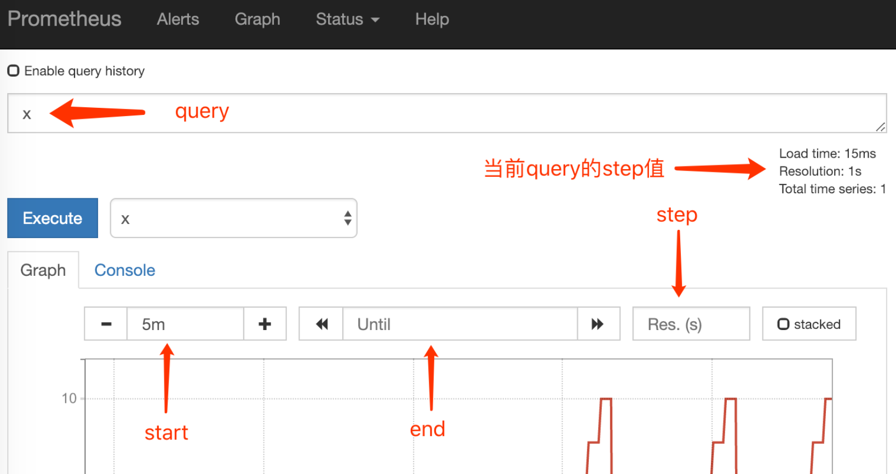
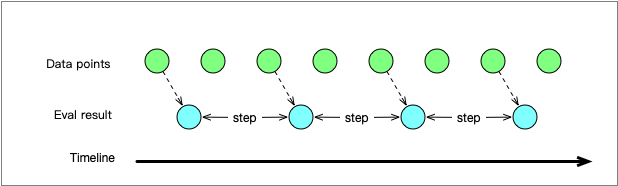
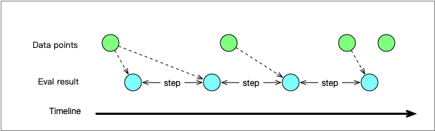
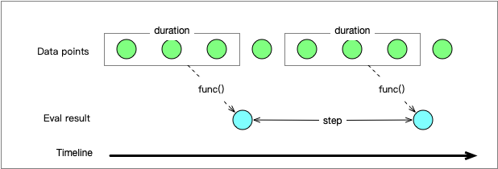
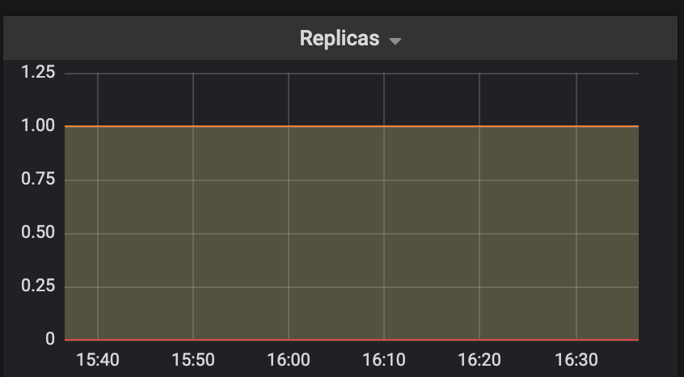
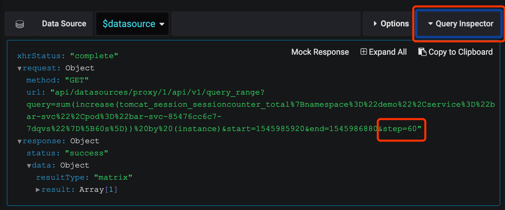

详细解释Prometheus range query中的step参数的作用。
Prometheus有两种query：instant query、range query。本文要讲的就是range query中的step参数。
range query是非常常见的一种query，看看它有哪些参数：
query=<string>: PromQL表达式。start=<rfc3339 | unix_timestamp>: 时间范围的开始。end=<rfc3339 | unix_timestamp>: 时间范围的结束。step=<duration | float>: 查询解析度（query resolution）。timeout=<duration>: 执行超时。这个参数是可选的。
在Prometheus expression browser里看到的是这样的：

注意到上图中的Res框里没有给值，没有给的话Prometheus会自动给一个值，这个值在图示右上角可以看到。
step对于查询结果的影响
Prometheues在对PromQL表达式求值的逻辑是这样的（详见这个issue里的回答）：
- 对于[start, end]时间区间，从start开始，以step为长度，把时间区间分成若干段
- 对每个段进行求值
举例：start=10,end=20,step=2，那么就会有ts=10,ts=12,ts=14,ts=16,ts=18,ts=206段，然后为这6个段进行求值。求值方式视乎表达式中Time series selector的类型而定。
PromQL有两种Time series selector：instant vector selector和range vector selector。下面将分别讲解：
Instant vector selector
形如下面的就是Instant vector selector，x是metric的名字。
xPrometheus在对每段Instant vector selector求值的逻辑是这样的：
- 从该段的timestamp（含）往前找，取第一个找到的data point的值。如果有一个data point的timestamp==该段的timestamp，则直接使用该data point。
- 如果该段timestamp往前的5分钟范围内没有找到任何data point，则该段无值。
下面这张图解释了上面逻辑：

图中的绿点是Prometheus实际存储的数据，按照时间轴从左到右排列。蓝点是根据step参数的求值结果。
当data point间隔比step更大的时候会发生下图这种情况：

可以看到有两个段的求值结果来自于同一个data point。
Range vector selector
形如下面的就是Range vector selector，x是metric的名字，方括号里的是range duration。
x[5m]range vector select返回的是当前timestamp之前的range duration内的所有data point。range vector是不能直接用做绘图的，你得用某些function把range vector转换成instant vector才行，比如rate()。
下图解释了是如何对Range vector selector进行分段求值的：

step和rate duration
step和range duration是独立的两个参数，在某些情况下两者的值存在某种限制条件，这里例举rate()来说明。rate()的作用是获得一个range-vector的每秒平均增长率。
如果step=10m而range duration=5m，那么rate在计算的时候会丢失一半的数据，两个分段之间的data point有一半没有被纳入计算。前面那张图就存在数据丢失的情况，有一个data point被漏掉了。
因此在使用rate()时，range duration得大于等于step。
而如果是irate()，这个限制则是range duration不得大于step（详见Brian Brazil的Presentation）。
Grafana中的step参数
在Grafana中并没有直接提供step参数，而是这两个参数：min step和resolution（文档在这里)。min step故名思义设定的是step的最小值，那么resolution是什么呢？
大家都知道Grafana都是用来画图的，比如下面这张图Y轴是值，X轴则是时间线，因此在X轴方向的每个像素都代表了一个timestamp。

resolution就是用来根据像素来计算step的一个参数。下面用6个像素以及它们的timestamp来说明：
x=1,ts=0; x=2,ts=5; x=3,ts=10; x=4,ts=15; x=5,ts=20; x=6,ts=25resolution=1/1时，那么step就是相邻像素所代表的timestamp的差，即5；resolution=1/2时，那么step就是相隔1个像素的两个像素的timestamp的差，即10；resolution=1/3时，那么step就是相隔2个像素的两个像素的timestamp的差，即15；- 以此类推
而每个像素所代表的timestamp受两个因素影响：
- 查询所定义的时间范围
- Graph的宽度（单位：像素）
所以在Grafana发起的查询中step参数是动态的。其实这也是很合理的，因为只有这样才能够在Graph宽度小的时候绘图更粗糙（即step更大），Graph宽度大的时候绘图更精细（即step更小，但是不能小于min step）。实际发起的请求的step参数你可以在Graph的Query Inspector里看到：

但是我们之前不说过了rate()的range duration不能小于step吗？那么把range duration给固定值的化就不太好了，怎么办呢？你可以使用Grafana提供的内置变量$__interval，它代表的Grafana就是计算出来的step的值。比如这样就能够将range duration和step保持一致了（更多内置变量可以见这里）：
rate(x[$__interval])所以，你想自己实验一把
如果你想自己动手实验，但是又苦于无法制造干净的假数据，那么可以参考这篇文章推荐的方法。